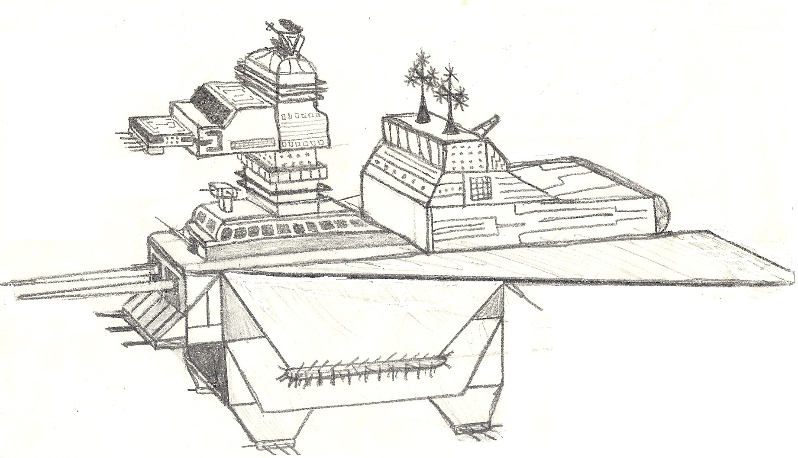

Jason Blazzard
Projects, experiments, and stories crafted with care.
A personal home for interactive web work, temple progress, and creative archives. Designed to feel simple, calm, and modern.

Milestone Goal
100 Temples
Follow the journey to complete ordinances in 100 houses of the Lord by 2030.
Interactive
JS Games
Hands-on browser games and exercises built with vanilla JavaScript.
Builds Spotlight
Builds
Gallery of builds, including projects made with repurposed and reclaimed materials.
Talk Notes
Elder Holland Ford
Reference notes and supporting materials in PDF format.
Family
Mom Page
A dedicated place for family-centered memories and links.
Spirit Lake, Idaho
Spirit Lake
Spirit Lake in Idaho is located in the heart of the panhandle of the state near Coeur d'Alene.
Creative Build
Latter-day Prophets
A featured CodePen project with interactive storytelling.